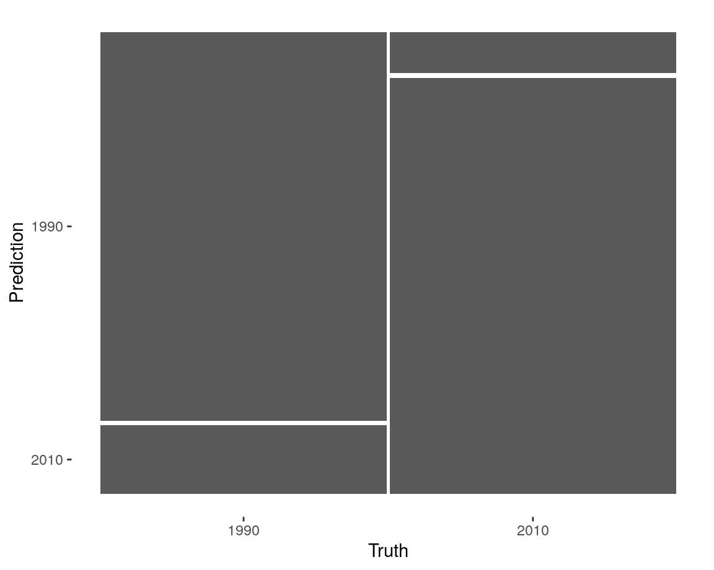
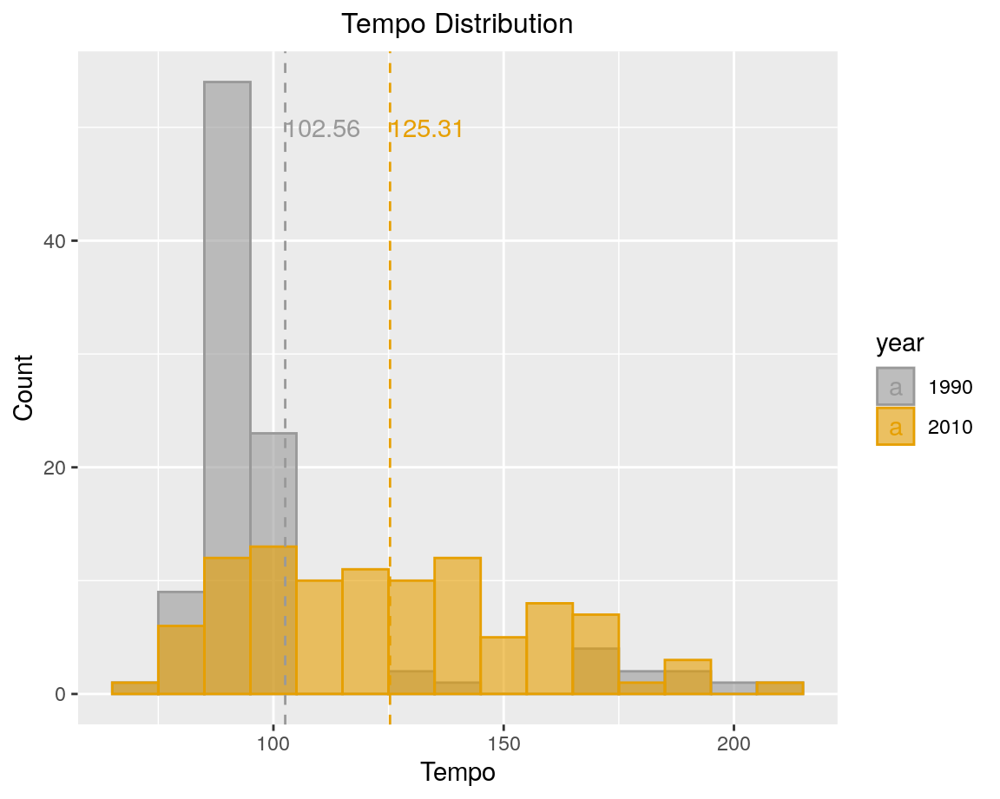
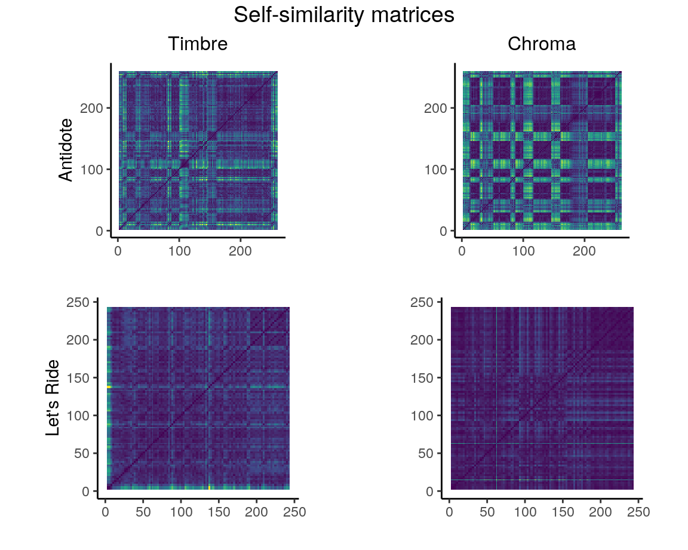
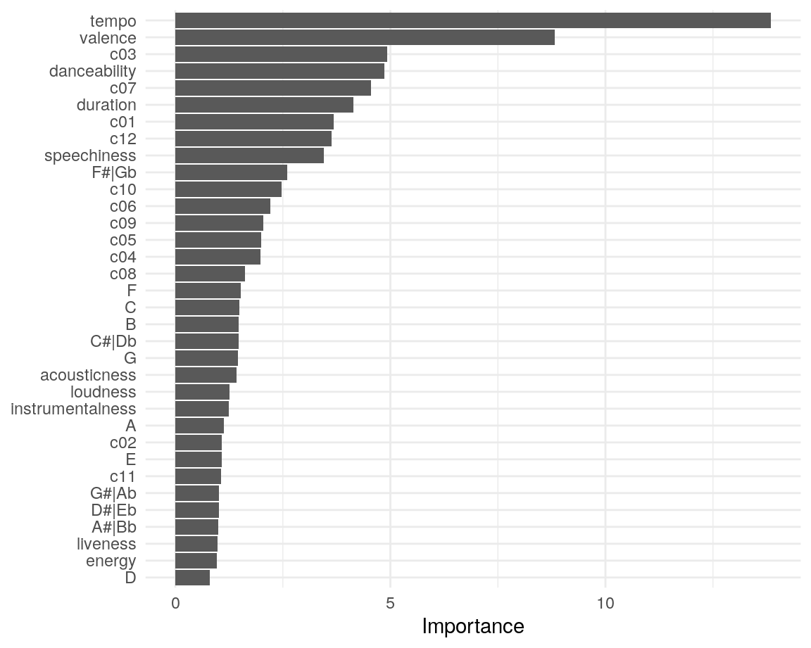
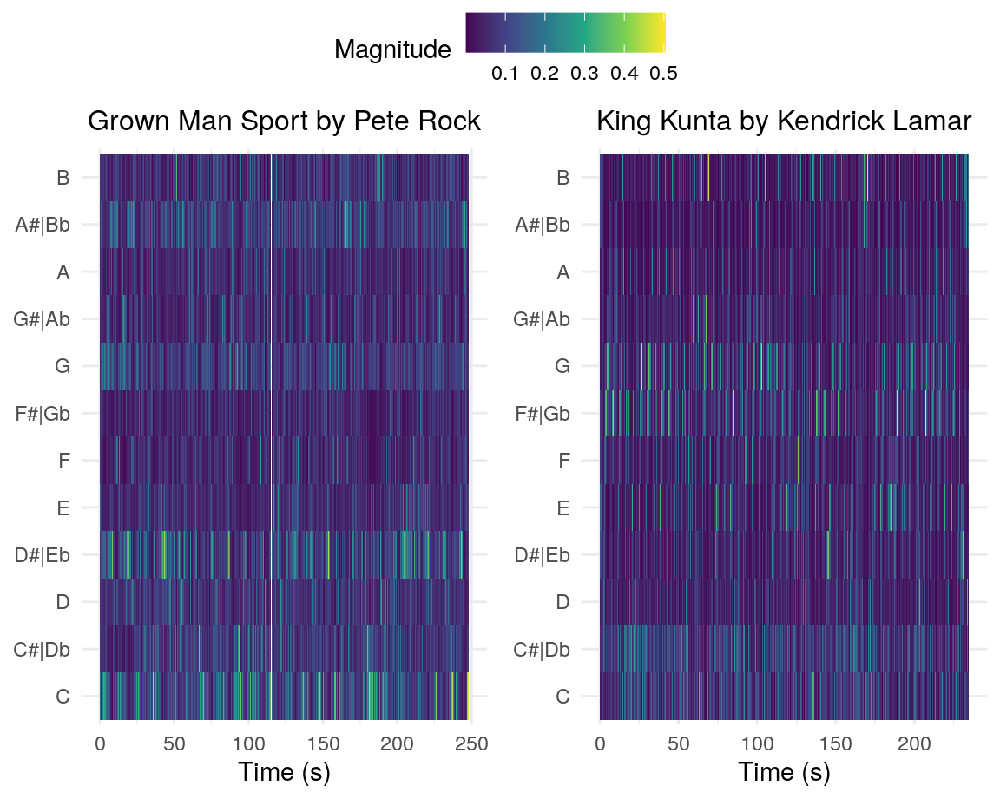

Coefficient 3 looks like the most promising marker distinguishing these genres.

In this plot I show two songs with the lowest speechiness in my corpus. On the left a 1993 song called You Know How We Do It by Ice Cube and on the right a 2010 song called Mr.Rager by Kid Cudi.
The left shows a quite constant presence of the c01 coefficient. Only the begin and end have a lower magnitude, as the song fades in and out. The constant presence of c01 can possibly be explained by the fact that the song has a constant beat with no choruses or verses.
This is different in the right plot as the magnitude of c01 and c02 coefficients seem to alternate each other. These alternations exactly match the chorus and verse in the song. The c02 coefficient represents brightness, so the verses seem to have a higher brightness than the choruses.
At about two hundred seconds in the right plot, it shows a high magnitude in the c02. This may be caused by the fact the singer starts singer higher and longer notes.
Both songs seem to have a constant presence of the c06 coefficient.

Here I show a self-similarity matrix of the song with the highest tempo in my corpus: Lord Pretty Flacko Jodye 2 (LPFJ2) by A$AP Rocky. This song has a BPM of 207.982 according to Spotify, it however feels more like 104 BPM.
In both matrices a dark blue diagonal is visible, so the moments in the song are highly similar here. This makes sense, because here the song is compared with the exact same moment in time.
Also, in both timbre and chroma a low similarity band is seen along the x- and y-axis. This is caused by the fact the song has a constant four note melody playing, except in the beginning of the song.
The whole feel of the song is quite the same, which is why so much of the timbre matrix shows that the song is very similar to itself. However, little differences in rap melody or in the constant background melody become very visible in the chroma matrix. These are represented by the horizontal and vertical green lines. At about 85 seconds, the background track fades away for a small amount of time (which is a big change in feel), which also can be seen in the timbre matrix by the green horizontal and vertical line at this time stamp.
Chosen Corpus I will be using three Spotify playlists, namely Best Rap Songs of 2010, Best Rap Songs of 2015 and I Love My 90s Hip-Hop. They respectively have fifty, fifty, and a hundred songs in them. I chose this corpus, since I am a big fan of 90s Hip-Hop and I am curious how the Hip-Hop genre has changed in the next two decades. The two playlists from the 10s will represent this decade together. The research question I will try to answer in this storyboard is: What are the measurable differences between 1990s and 2010s Hip-Hop?
Characteristics of the Corpus Both playlists consist of various artists and albums. They only have the genre in common: Hip-Hop. I expect Hip-Hop songs from the 90s to be more alike, as they often use samples or jazz influences in their songs. I also expect Hip-Hop songs from the 2010s to have a higher danceability, as the Hip-Hop genre became more widely made, so that it may have gotten more pop influences. The 90s playlist has tracks from 1990 up until 1999, the 10s playlists have a less equally distributed year range. Fifty tracks are from 2010 and the other fifty tracks are from 2015.
Representativeness of the Corpus All playlists consist of a broad range of different artists from their decade, but also some songs of the same artists. This could be a limitation of the corpus.
Typical and Atypical Tracks A typical track from the 90s playlist is Do for Love by 2Pac. It uses a sample and from the 70s and has very meaningful lyrics. An atypical track from the 90s playlist is Insane in the Brain by Cypress Hill, as it has a very different vibe as opposed to the other songs in the playlist.
want to add (a)typical tracks from 2010s playlist here
This plot shows the tempo distribution of the tracks in the 1990s and the 2010s playlist. The 90s playlist shows a large peak in the lower BPM, while the 10s have a more equally distributed BPM. The vertical lines show the mean tempo.
try to find a explanation for this!
In the next plot the speechiness feature of both playlists is plotted. The songs from 2010 have less speechiness than the 90s. A possible cause of this could be the popifying of Hip-Hop and adding more singing to the tracks.
add more detailed explanation!

The last plot shows the duration of a song vs the danceability. The size of a point shows how high the acousticness is. The 90s songs seem to have a higher danceability than most 10s tracks. Except for a single outlier, most songs seem to have about the same duration. The acousticness does not seem to correlate to the duration or danceability.
Chromagram of two songs. I havent really been able to find songs that have a really remarkable chromagram. I did want to see if I could show the chromagrams nicely, hence these two.

The 1996 song Hip 2 Da Game by Lord Finesse is sampled by Mac Miller in his 2010 song called Kool Aid and Frozen Pizza. Even though the background track is the same, the chromagram does not show this similarity. I suspect that the duration of the two songs have something to do with this. The Mac Miller version is about two minutes shorter than the Lord Finesse version. When dynamic time warping is performed, the Mac Miller song will need to be stretched quite a lot.
The difference between self-similarity matrices from the 90s and 10s is very apparent. In the song Big Poppa, a 90s classic, there are small bits of repetition, what one might call a small chorus. The beat is constant throughout the song and Biggie can be heard rapping the whole song. In the matrix of Antidote we see a very different pattern. The song has a lot of repetition, which is reflected in the vertical and horizontal stripes in the matrix. Travis Scott also raps less and he has picked up a more singing style than rapping.
These matrices very well show the shift from the more rap and beat based 90s songs to the more popified way of making Hip-Hop (having the standard verse/chorus/bridge layout).
90s hip-hop is gewoon beter, ik ben een simpel mens